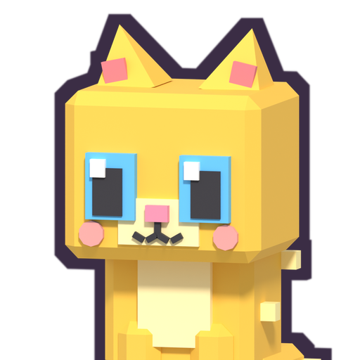

Free pet

Starcoat
Say hi to our group and like the game, then Starcoat follows you around your spa.
Starcoat is yours. Thank you for joining and liking!
Join Creampuff Games
Our group on Roblox
Join
Like the game
The thumbs up on the game's page
I did it
Claim Starcoat
Claim Starcoat